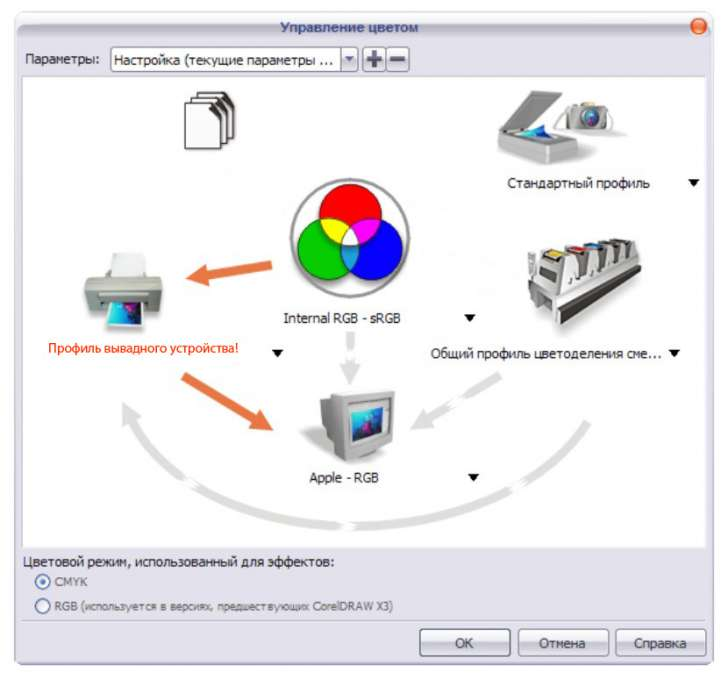
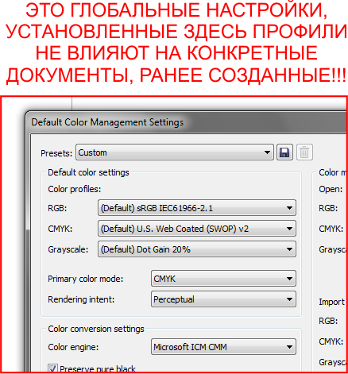
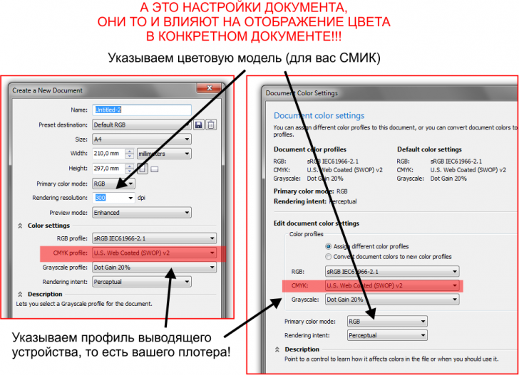

Натройка цветовых профилей в corel X5
Ale / 16.06.2010, 21:38/00:41
Форум:
Как можно настроить цвет в X5.
Во вложении приклеил скрин с настройками цвета из X4.
как правильно настроить настройки для X5.
В X5 вообще не могу найти общий профиль cmyk.
DjVu, на твоем скриншоте, цвет изначально слишком зеленый (не правильный)!
По последнему скриншоту видно, что у тебя не какого профиля kodak не стоит!
Почитай здесь, пойми суть, потом будет легче, не важно в какой версии:
http://cdrpro.ru/news/2009-08-04-126
Des425, немного темнее чем при печати, но все же зеленый, а не желтый
За ссылку спасибо, прочтем
Я цветовые профили меняю, а цвета одинаково дикие
Sancho, установить СМИК профиль нашего плотера в настройках корела не получится, т.к. плоттер не один и печать идет вообще с другого компьютера.
DjVu, если нужно, чтоб монитор показывал правильно, что будет печатать выводное устройство, то настройки должны выглядеть приблизительно так!

Des425, да, все верно. Но в 15 же все поменялось или корел криво встал или я совсем дурак. Не выходит у меня
Добавлено (01.07.2010, 12:41)
---------------------------------------------
Профиль у меня стоял стандартный, я с монитором колдовала и получалось же
Добавлено (01.07.2010, 12:42)
---------------------------------------------
в смысле профиль выводного устройства
После изменение настроек профиля в Х5 версии, лучше перезагрузить Corel, а ту цвета отображаются изходя из старой настройки, (по крайней мере так у меня, наблюдалось при смене (Presets - своих настроек))
Если колдовать, то и в Х5 все получиться, только придется сменить профессию! :D
кхм кхм....


Если и это непонятно то срочно заявление об увольнении на стол начальства!
Перезагружала. Все одно( Попробую переустановить
Спасибо за помощь, будем мучить дальше сами)
Добавлено (01.07.2010, 13:19)
---------------------------------------------
Уважаемый Sancho, я же говорю, что плоттер не подключен к моему компьютеру и мне негде взять его профиль.
Мне понятно где глобальные настройки, а где локальные. Я умею читать. В кореле работаю не один год и все нормально
Не нервничайте так, у вас совета спрашивают. Учиться у ЗНАЮЩИХ мы всегда готовы Спасибо!
DjVu, да какая разница подключен или нет плотер, профиль находится на CD или DVD которое было с этим плотером, там его профили. Если нет диска, то ищите на сайте компании производителя. Профиль это файл ICC, что бы его использовать не обязательно даже покупать плотер :D
П.С. Я не нервничаю, а стегаю ;D
П.С.С. Рад что вы умеете читать :)
DjVu, скопируйте профили с того компьютера где установлен плоттер, C:\WINDOWS\system32\spool\drivers\color, перенесите на свой, в эту же папку, откройте Corel и импортируйте профиль! (Все будет ок.)
Sancho, чем устраивать возню с поиском дисков (станок не один) и профилей я пожалуй посижу и дальше в 14м там моя проблема решается одним кликом
Вообще при чем тут плоттер. Я о мониторе речь веду. Контрастней цвета видеть хочу
И главный вопрос:
Почему одновременно открытый, один и тот же файл в разных корелах отображается по разному
Как достичь идентичности
Добавлено (01.07.2010, 14:04)
---------------------------------------------
А может быть косяк в том, что у меня и 14 и 15 корелы стоят одновременно?
Страницы